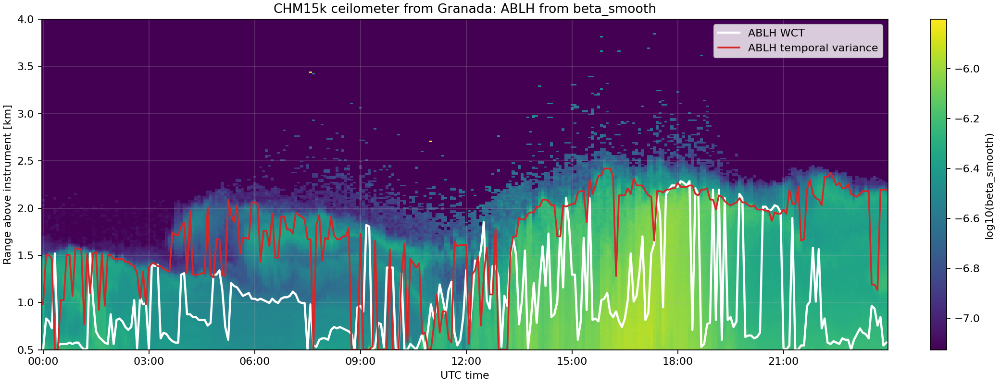

Elastic quicklook
Time-height view of the generated 532 nm elastic signal.
uv run python scripts/generate_docs_figures.py

These examples are intentionally small. They show the shape of inputs, outputs and validation checks before you move to full RAW measurements or external SCC workflows.
uv run python scripts/build_docs.py
To regenerate one family of figures, use the command shown in the corresponding example. Each tab keeps the command and expected result together so visual changes are easy to review before publishing.
Time-height view of the generated 532 nm elastic signal.
uv run python scripts/generate_docs_figures.py
Raman channel quicklook generated from the synthetic 2D signal.
uv run python scripts/generate_docs_figures.py

LPDR derived from synthetic polarized signal components.
uv run python scripts/generate_docs_figures.py

Klett, iterative elastic, Raman extinction, Raman backscatter and LPDR checks against known synthetic truth.
uv run python scripts/generate_docs_figures.py

Cloudnet backscatter with WCT and temporal-variance ABLH products overlaid. The input file is downloaded from Cloudnet if the local cache is missing.
uv run python examples/cloudnet_chm15k_abl_workbench.py --output-dir artifacts/cloudnet_chm15k_abl_workbench

Run the RAW-backed preprocessing contract checks before release when correction behavior changes.
uv run pytest tests/preprocessing/test_preprocessing_basic_alh.py -q
Validate both layer detection methods against a synthetic 2D signal with known ABLH.
uv run pytest tests/retrieval/test_ablh_detection.py -q
import numpy as np
from lidarpy.retrieval.synthetic.generator import synthetic_signals
ranges = np.arange(30.0, 6000.0, 30.0)
elastic, raman, params = synthetic_signals(
ranges,
wavelengths=(532, 607),
ae=1.0,
lr=50.0,
apply_overlap=False,
number_of_initial_nan_values=0,
)The synthetic generators create compact elastic, Raman and depolarization cases that can be inspected visually before using them in retrieval tests.
Expected result: returned arrays share the requested range grid, and
params contains the molecular and particle fields used as
synthetic truth.
The preprocessing entry point expects a converted NetCDF product, not a RAW zip. Conversion is tested separately so preprocessing can focus on corrections and product contracts.
from pathlib import Path
import xarray as xr
from lidarpy.preprocessing import preprocess
dataset = preprocess(
Path("path/to/RS_20230830_0315.nc"),
channels=["1064fta"],
crop_ranges=(0.0, 15000.0),
apply_dc=False,
apply_dt=False,
apply_bg=True,
apply_bz=True,
apply_ov=False,
gluing_products=False,
apply_sm=False,
)
assert dataset.attrs["bg_corrected"] == "True"
assert dataset.attrs["bz_corrected"] == "True"
assert "signal_1064fta" in dataset
assert dataset["signal_1064fta"].dims == ("time", "range")
dataset.close()
Expected result: a dataset with time and range
dimensions, channel metadata and correction flags in attributes. If the
signal variable is missing, first check that the requested channel exists
in the converted file.
Use an overlap file when a trusted per-channel profile already exists. The profile is selected by channel and interpolated to the dataset range grid when needed.
corrected = preprocess(
"path/to/RS_20230830_0315.nc",
channels=["1064fta"],
crop_ranges=(0.0, 15000.0),
apply_bg=True,
apply_bz=True,
apply_ov=True,
overlap_path="path/to/overlap_1064fta.nc",
apply_dc=False,
apply_dt=False,
apply_sm=False,
)
assert corrected.attrs["ov_corrected"] == "True"
assert corrected["overlap_corrected"].sel(channel="1064fta").item() == 1
If no overlap file is provided, the ALHAMBRA configuration can derive the
overlap profile from configured full-field and near-field channel pairs.
This path is covered by tests for 1064fta and
1064nta.
corrected = preprocess(
"path/to/RS_20230830_0315.nc",
channels=["1064fta", "1064nta"],
crop_ranges=(0.0, 15000.0),
apply_bg=True,
apply_bz=True,
apply_ov=True,
apply_dc=False,
apply_dt=False,
apply_sm=False,
)
assert "overlap_1064fta" in corrected
assert corrected["signal_1064fta"].attrs["overlap_applied"] == "1064fta"
ABLH methods operate on time, range arrays. The same
function accepts lidarpy datasets with signal_* variables
and Cloudnet ceilometer products with beta_smooth,
beta or beta_raw.
import xarray as xr
from lidarpy.retrieval.ablh import detect_ablh
cloudnet = xr.open_dataset("path/to/cloudnet_chm15k.nc")
ablh = detect_ablh(
cloudnet,
input_kind="cloudnet",
variable="beta_smooth",
method="temporal_variance",
min_range=500.0,
max_range=4000.0,
time_window_minutes=10.0,
threshold=1e-5,
)
ablh.to_netcdf("cloudnet_temporal_variance_ablh.nc")
Expected result: the output NetCDF contains ablh and
ablh_range in meters above the instrument. If the input has a
Cloudnet height coordinate, ablh_height is also
populated in meters above mean sea level.
The repository includes a local workbench that mirrors the synthetic
ABLH tests on a Granada CHM15k Cloudnet product. If the default input is
missing, the script downloads it from the Cloudnet API into the local
ignored cache under tests/data/RAW/chm15k_25a1c14a/. It writes
one NetCDF per method and a diagnostic quicklook generated from the
original Cloudnet product plus the derived ABLH products.
$env:PYTHONPATH = "src"
$env:MPLBACKEND = "Agg"
python examples\cloudnet_chm15k_abl_workbench.py `
--output-dir artifacts\cloudnet_chm15k_abl_workbenchfrom lidarpy.retrieval.klett import klett_rcs
from lidarpy.utils.utils import signal_to_rcs
rcs = signal_to_rcs(elastic.values, ranges)
particle_beta = klett_rcs(
rcs,
ranges,
params["molecular_beta"],
reference=(3000.0, 3500.0),
lr_part=50.0,
)from scipy.integrate import cumulative_trapezoid
from lidarpy.retrieval.klett import iterative_beta_forward
start_height = 600.0
start_idx = abs(ranges - start_height).argmin()
initial_aod = cumulative_trapezoid(
params["particle_alpha"],
ranges,
initial=0.0,
)[start_idx]
particle_beta = iterative_beta_forward(
rcs,
calibration_factor=1e11,
range_profile=ranges,
params=params,
lr_part=50.0,
start_height=start_height,
height_top=2400.0,
initial_particle_optical_depth=float(initial_aod),
)Use the generated truth fields to verify whether the retrieval is recovering the expected aerosol structure and where boundary or reference assumptions limit the comparison.
SCC end-to-end operation requires credentials and a real server, but the client contract can be validated offline. The test suite uses fake HTTP sessions to check URL construction, API parsing, streamed downloads and upload response parsing.
$env:PYTHONPATH = "src"
.\.venv\Scripts\python -m pytest tests\scc -qExpected result: SCC tests pass without network. If they fail, fix the local client or package-data issue before investigating a real SCC integration failure.